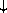
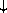
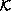

This chapter provides formal descriptions of what has already been described informally in previous chapters of this report.
This section provides a formal syntax for Scheme written in an extended BNF.
All spaces in the grammar are for legibility. Case is insignificant; for example, #x1A and #X1a are equivalent. <empty> stands for the empty string.
The following extensions to BNF are used to make the description more concise: <thing>* means zero or more occurrences of <thing>; and <thing>+ means at least one <thing>.
This section describes how individual tokens (identifiers, numbers, etc.) are formed from sequences of characters. The following sections describe how expressions and programs are formed from sequences of tokens.
<Intertoken space> may occur on either side of any token, but not within a token.
Tokens which require implicit termination (identifiers, numbers, characters, and dot) may be terminated by any <delimiter>, but not necessarily by anything else.
The following five characters are reserved for future extensions to the
language: [ ] { } |


The following rules for <num R>, <complex R>, <real R>, <ureal R>, <uinteger R>, and <prefix R> should be replicated for R = 2, 8, 10, and 16. There are no rules for <decimal 2>, <decimal 8>, and <decimal 16>, which means that numbers containing decimal points or exponents must be in decimal radix.

<Datum> is what the read procedure (section 6.6.2) successfully parses. Note that any string that parses as an <expression> will also parse as a <datum>.
The following grammar for quasiquote expressions is not context-free. It is presented as a recipe for generating an infinite number of production rules. Imagine a copy of the following rules for D = 1, 2, 3, .... D keeps track of the nesting depth.
In <quasiquotation>s, a <list qq template D> can sometimes be confused with either an <unquotation D> or a <splicing unquotation D>. The interpretation as an <unquotation> or <splicing unquotation D> takes precedence.


This section provides a formal denotational semantics for the primitive expressions of Scheme and selected built-in procedures. The concepts and notation used here are described in [29]; the notation is summarized below:
The reason that expression continuations take sequences of values instead of single values is to simplify the formal treatment of procedure calls and multiple return values.
The boolean flag associated with pairs, vectors, and strings will be true for mutable objects and false for immutable objects.
The order of evaluation within a call is unspecified. We mimic that here by applying arbitrary permutations permute and unpermute, which must be inverses, to the arguments in a call before and after they are evaluated. This is not quite right since it suggests, incorrectly, that the order of evaluation is constant throughout a program (for any given number of arguments), but it is a closer approximation to the intended semantics than a left-to-right evaluation would be.
The storage allocator new is implementation-dependent, but it must
obey the following axiom: if new 
 L, then
(new | L) 2 = false.
L, then
(new | L) 2 = false.
The definition of  is omitted because an accurate definition of would complicate the semantics without being very interesting.
If P is a program in which all variables are defined before being referenced or assigned, then the meaning of P is
where I* is the sequence of variables defined in P, P'
is the sequence of expressions obtained by replacing every definition
in P by an assignment, <undefined> is an expression that evaluates
to undefined, and
 is the semantic function that assigns meaning to expressions.
is the semantic function that assigns meaning to expressions.


Definition of deliberately omitted.


Here and elsewhere, any expressed value other than undefined may be used in place of unspecified.


This section gives macro definitions for the derived expression types in terms of the primitive expression types (literal, variable, call, lambda, if, set!). See section 6.4 for a possible definition of delay.
(define-syntax cond
(syntax-rules (else =>)
((cond (else result1 result2 ...))
(begin result1 result2 ...))
((cond (test => result))
(let ((temp test))
(if temp (result temp))))
((cond (test => result) clause1 clause2 ...)
(let ((temp test))
(if temp
(result temp)
(cond clause1 clause2 ...))))
((cond (test)) test)
((cond (test) clause1 clause2 ...)
(let ((temp test))
(if temp
temp
(cond clause1 clause2 ...))))
((cond (test result1 result2 ...))
(if test (begin result1 result2 ...)))
((cond (test result1 result2 ...)
clause1 clause2 ...)
(if test
(begin result1 result2 ...)
(cond clause1 clause2 ...)))))
(define-syntax case
(syntax-rules (else)
((case (key ...)
clauses ...)
(let ((atom-key (key ...)))
(case atom-key clauses ...)))
((case key
(else result1 result2 ...))
(begin result1 result2 ...))
((case key
((atoms ...) result1 result2 ...))
(if (memv key '(atoms ...))
(begin result1 result2 ...)))
((case key
((atoms ...) result1 result2 ...)
clause clauses ...)
(if (memv key '(atoms ...))
(begin result1 result2 ...)
(case key clause clauses ...)))))
(define-syntax and
(syntax-rules ()
((and) #t)
((and test) test)
((and test1 test2 ...)
(if test1 (and test2 ...) #f))))
(define-syntax or
(syntax-rules ()
((or) #f)
((or test) test)
((or test1 test2 ...)
(let ((x test1))
(if x x (or test2 ...))))))
(define-syntax let
(syntax-rules ()
((let ((name val) ...) body1 body2 ...)
((lambda (name ...) body1 body2 ...)
val ...))
((let tag ((name val) ...) body1 body2 ...)
((letrec ((tag (lambda (name ...)
body1 body2 ...)))
tag)
val ...))))
(define-syntax let*
(syntax-rules ()
((let* () body1 body2 ...)
(let () body1 body2 ...))
((let* ((name1 val1) (name2 val2) ...)
body1 body2 ...)
(let ((name1 val1))
(let* ((name2 val2) ...)
body1 body2 ...)))))
The following letrec macro uses the symbol <undefined> in place of an expression which returns something that when stored in a location makes it an error to try to obtain the value stored in the location (no such expression is defined in Scheme). A trick is used to generate the temporary names needed to avoid specifying the order in which the values are evaluated. This could also be accomplished by using an auxiliary macro.
(define-syntax letrec
(syntax-rules ()
((letrec ((var1 init1) ...) body ...)
(letrec "generate_temp_names"
(var1 ...)
()
((var1 init1) ...)
body ...))
((letrec "generate_temp_names"
()
(temp1 ...)
((var1 init1) ...)
body ...)
(let ((var1 <undefined>) ...)
(let ((temp1 init1) ...)
(set! var1 temp1)
...
body ...)))
((letrec "generate_temp_names"
(x y ...)
(temp ...)
((var1 init1) ...)
body ...)
(letrec "generate_temp_names"
(y ...)
(newtemp temp ...)
((var1 init1) ...)
body ...))))
(define-syntax begin
(syntax-rules ()
((begin exp ...)
((lambda () exp ...)))))
The following alternative expansion for begin does not make use of the ability to write more than one expression in the body of a lambda expression. In any case, note that these rules apply only if the body of the begin contains no definitions.
(define-syntax begin
(syntax-rules ()
((begin exp)
exp)
((begin exp1 exp2 ...)
(let ((x exp1))
(begin exp2 ...)))))
The following definition of do uses a trick to expand the variable clauses. As with letrec above, an auxiliary macro would also work. The expression (if #f #f) is used to obtain an unspecific value.
(define-syntax do
(syntax-rules ()
((do ((var init step ...) ...)
(test expr ...)
command ...)
(letrec
((loop
(lambda (var ...)
(if test
(begin
(if #f #f)
expr ...)
(begin
command
...
(loop (do "step" var step ...)
...))))))
(loop init ...)))
((do "step" x)
x)
((do "step" x y)
y)))